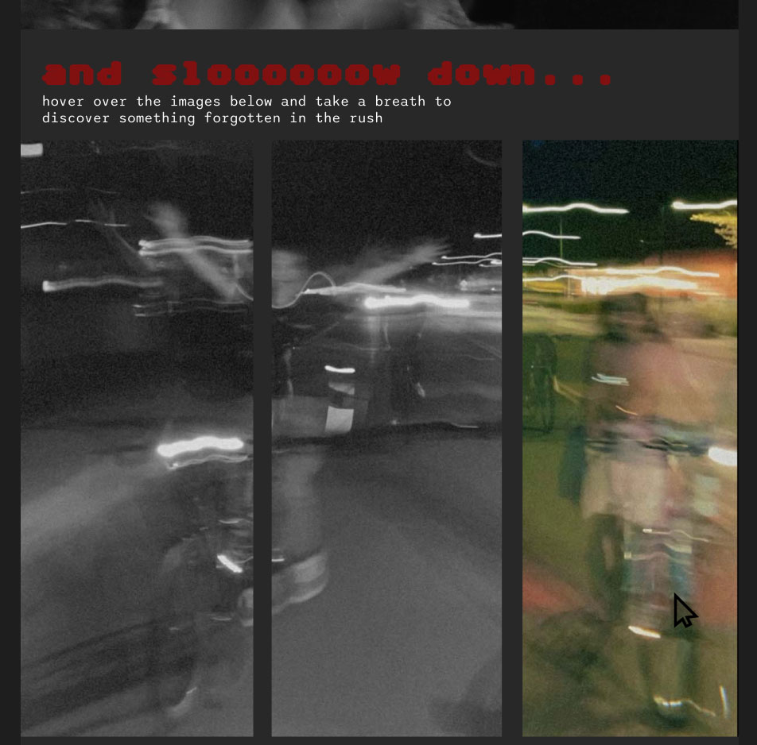
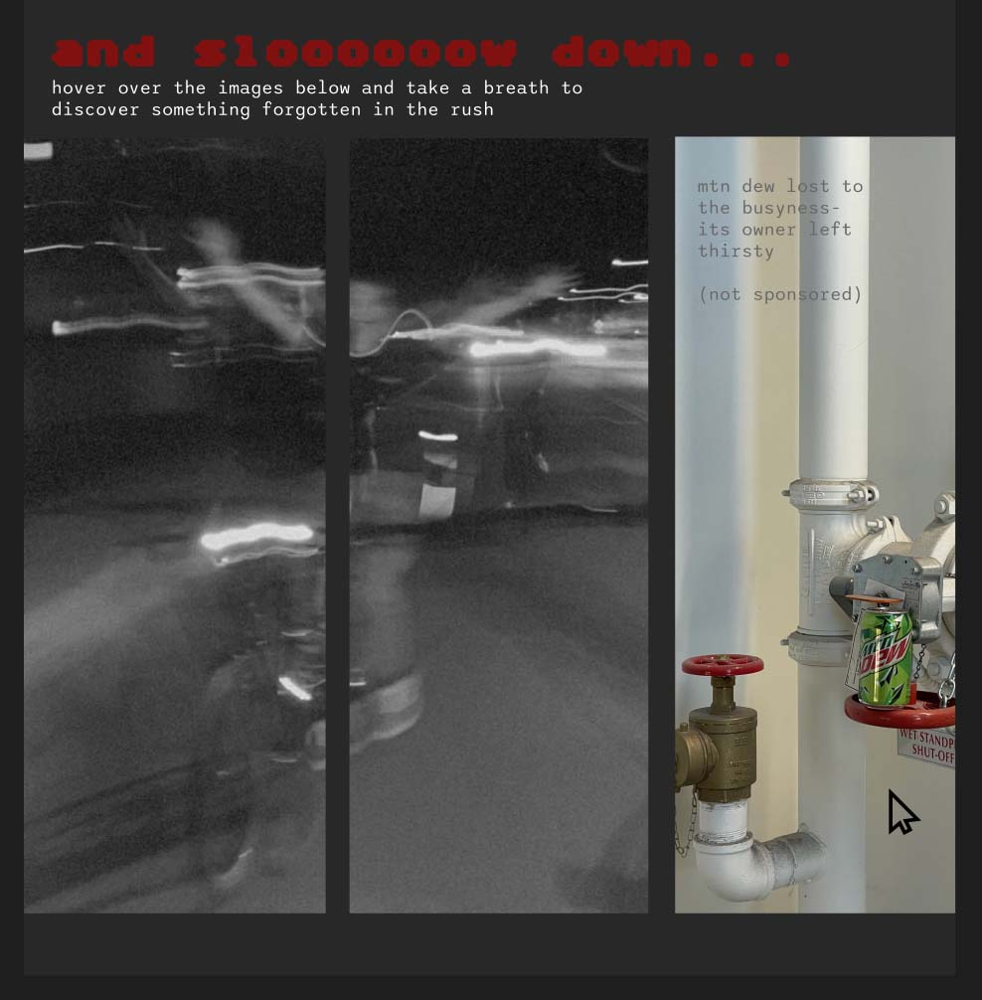

and slooooow down
The above content shows my porjet thus far. I have experimented with layout, images, color, and text content. After discussing with classmates the following paragraph expalins my thoughts for devloping my project moving forwards.
Overall the concept is fairly solid and can be improved by adding a few more images and more words to prompt the user to think about the contrast between when they are busy, and what life could be like if they slowed down. There was a trend on social media a few months ago that was based on the idea of “the art of noticing” where individuals would notice beauty in things typically ignored. This every picture project takes a similar approach of seeing what amusing and beautiful things can be noticed when you slow down. The current content can be improved mostly but continuing to expand and play with different image interactions. It could include something like a image of motion that when the user interacts with it, it shows an image of a forgotten thing.
see examples below. the first image shows a image showing color when mouse is over.
there will be a fade transition to then show the second image of the mtn dew.
